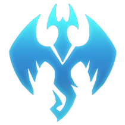

Carril del Barón
Luchadores rudos e independientes. El carril en solitario es ideal para campeones que saben cuidar de sí mismos. Los jugadores que eligen este carril entran en un tira y afloja perpetuo, en el que cada bando derriba las torretas para aplicar y absorber la presión.
Jungla
Esquivo y adaptable, el papel del junglero es vital para el éxito de un equipo. Los jungleros necesitan matar rápidamente a los monstruos de la jungla mientras se mantienen a salvo para realizar emboscadas. Esta es la posición ideal para campeones con conjuntos de mucho daño o curación.

Carril Central
El carril central suele ser el hogar de magos poderosos y otros combatientes. Los carrileros centrales pueden hacer emboscadas o ayudar rápidamente con los objetivos. ¡Pero ten cuidado! La posición central es una invitación abierta a las emboscadas.
Soporte
La misión del rol de soporte es apoyar a su compañero de dúo e inhabilitar a los enemigos. Un buen soporte amenaza al enemigo mientras protege o cura a su aliado, que se preocupa de darles el último golpe a los súbditos y repartir daño.
Carril del Dragon
En esta posición se encuentran los tiradores que se centran en matar a los súbditos. Los campeones que destacan en esta posición necesitan muchos objetos para desplegar todo su potencial, por lo que necesitan el apoyo de un compañero para llegar al juego tardío.
